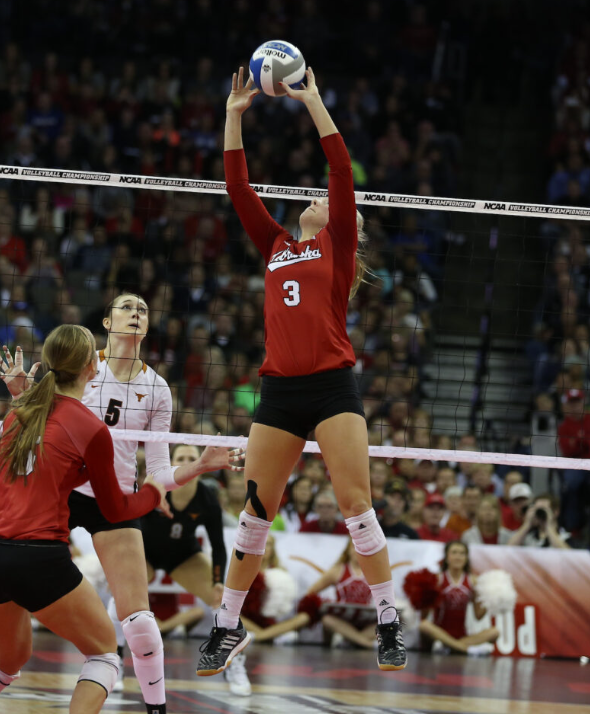
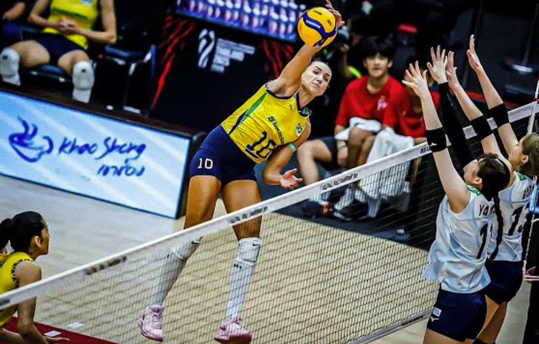
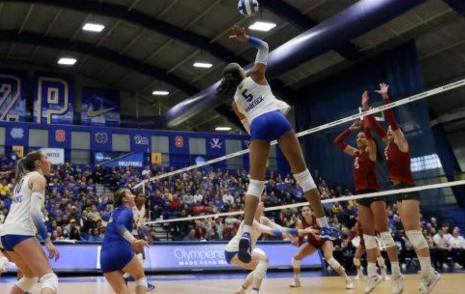
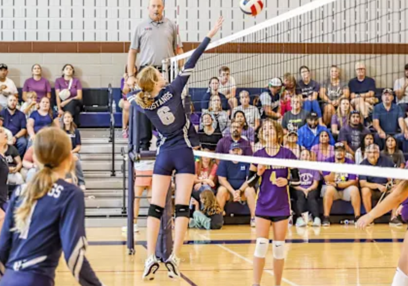
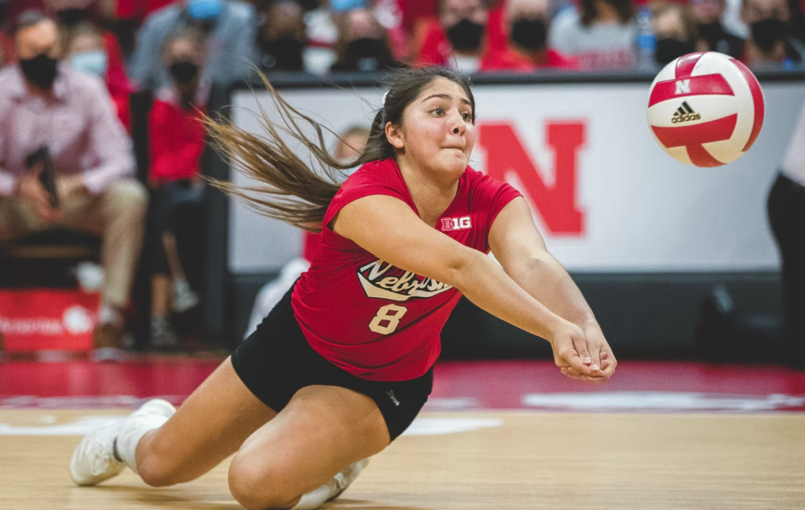

Every volleyball player has a job on the court. Players rotate through spots when their team wins the serve, but their roles help determine where they move after the ball is served. Here are the main positions you will see during a game.

Above is a photo of a setter, they help run the offense. After a teammate passes the ball, the setter usually takes the second touch and sends the ball to a hitter. Setters make quick decisions about which teammate has the best opportunity to score. Their hands have to be strong and steardy to set any ball any direction.
Below are two photos of different sides of hitters. You have outside hitters who attacked from the left side of the court. Outside hitters often receive serves, play defense, and hit the ball over the net. They are the easiest set for the setter, so often in critical moments the setter depends on the outside hitter to score. On the other hand, the right side hits from the right meaning that many of the players are left handed making it easier to hit a line shot or cross court shot. The right side and outside both help the middle block the pins, and the right side gets set by the setter doing a back set. Which is when the setter sets behind her head, to the rightside.


Below is an image of a middle in action. The middle blocker plays near the center of the net. They are known for having one of the most important jobs as a hitter. They have to stay up against the net blocking, then go up to block, come back down transition off the net, and then get ready for the chances the setter sets them and go up to hit or cover the other hitters.

The libero is a defensive specialist who wears a different-colored jersey. Liberos and Defense Specialist (known as a DS) usually play in the back row, receive serves, and make difficult digs to keep the ball from touching the floor. DS's have to be very active running to get off-the-block balls or balls that have flown passed the back of the court. They need to be active and fast, tracking down balls easily. Most liberos in national level teams are one of the shortest players on the team, as they need to be as close to the ground as possible to get balls up. Below is a photo of the libero from the D1 Nebraska team, she is one of the best liberos in the country.

In the most common plays of volleyball it starts with a serve, then a pass, a set and a hit. But as this is happening blockers and back-row defenders prepare for the other team's next attack. Volleyball works best when every player communicates and does their part. Every player knows how to call the ball when needed saying "mine" and if the setter can't get to the second ball they call out help, meaning the libero tries to get the second ball. All these positions need to come together and learn how to work together for the plays to come together and the team to work better.